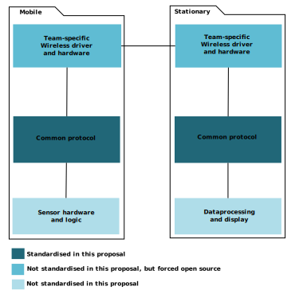

Project Integration
Common heartbeat protocol invitation
Saxion Academy of Lifescience Engineering & Design

- Version
- 0.9
- Date
- 2016-03-21
- Place
- Enschede
- Signees
Team # Delegate Student number 5 Berend Al 405759
Saxion Academy of Lifescience Engineering & Design
| Team # | Delegate | Student number |
|---|---|---|
| 5 | Berend Al | 405759 |
Acedemy Lifescience Engineering and Design has drafted five teams to work on Project Integration, where a portable heartbeat sensor is developed. All teams are required to build a Mobile device and a Stationary device that respectively measure and display the heartbeat; These two devices are to communicate wirelessly. The five teams all work independently, but one requirement dictates that all devices must interoperate.
The interface between mobile and fixed part shall be equal for all project groups. So, the fixed part of one groups operates on the mobile part of any group.
This is statistically impossible[citation needed] to happen without some kind of standardisation. This document shall provide agreement between teams on how to ensure a minimal level of interoperability.
This invitation proposes to standardise the OSI Host layers of all devices, leaving only the Media layers unspecified. This means that the devices do not strictly interoperate, but it retains the signee's right to choose their own preferred wireless technology.
Even though the application layer is standardised, this does not imply that the sensor or data must be equal between all teams. Each team can choose their own preferred sensor and they can choose what data to extract and display. The common protocol will only ensure that the data shared between any two devices is interpretable and never misinterpreted; The data can be communicated between the systems, but it remains up to the system if the data is used or ignored.
When the host layers are common between two teams, the devices will interoperate when the teams have chosen the same wireless technology. If the wireless technology between two teams is different, making the devices interoperate would only require a wireless adapter or bridge to translate between the two technologies. Such an adapter or bridge is relatively simple to build or even integrate into the system.
The common protocol will standardise device handshaking, semantics, and data encodings. The implementation method or language are not standardised, and each team may choose their preferred methods.
The protocol shall be specified collectively by the teams willing to
sign
this document.
Signatures, as well as amendements to this document may be submitted as
pull requests to
https://github.com/bernard-saxion/pint-heartbeat-protocol.
Alternatively, the document's author may be contacted on campus or through
saxion email.
To sign this document, simply add your team number and contact details to
the Signees
table on the first page.
This same repository shall hold the protocol specification. Specification is done by submitting pull requests. Pull requests will be discussed in the comments, and when consensus is reached the pull request is accepted.
Each part of the specification should strive to at least include:
In addition to the specification, teams must share their wireless drivers so that inter-team bridges may be developed and full interoperability may be achieved.
Teams may share their protocol implementations as a library for other teams to use and contribute to. Doing so may decrease the amount of work needed to maintain protocol compatibility between teams.
The recommended workflow is for each team to make a fork of the protocol repository. The teams will then work on a branch until they want to submit a pull request to propose to have their changes standardised.
This document dictates peer review as its only formal quality control. This in an attempt to keep organisational overhead as low as possible. If a team wants more strenuous quality control they may submit a pull request to amend this chapter, or they may negotiate with other individual teams.
There is strictly no control over whether or not the signees implement the protocol faithfully. Deviant implementations may cause a team to claim compatibility with another team where there is none. If a team wants to verify compatibility with another team, they have to negotiate amongst themselves.
Since the protocol will be developed at the same time as the implementations are developed, this will inevitably cause back- and forward incompatibilities. This is a pervasive unsolved problem in tech, so apart from mandating use of a version control tool (git) this will not be addressed.
This document takes away some freedoms from the signees; Some teams may refuse to sign. While strictly one renegade team can cause all other teams to fail their interoperability requirement. It is argued that compatibility with some teams is better than compatibility with no teams.
By signing this document the signee puts the protocol specification under exclusive control of team 5. While team 5 claims to only accept pull requests when consensus has been reached the signee may feel this amount of control is too absolute, or may come to doubt team 5's goodwill. If a team does not agree with the decisions made in this common protocol, they may clone the repository, give it a new name, and convince the other teams to abandon team 5's repository. This may hurt compatibility, as it creates two different standards, but may protect the signee from a nefarious repository owner.